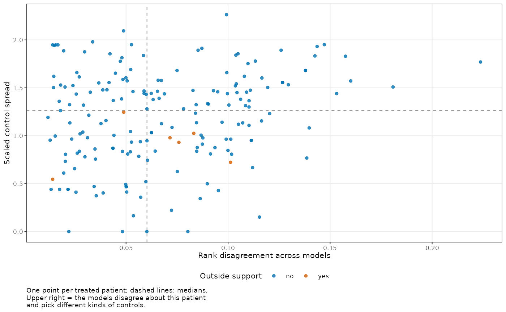
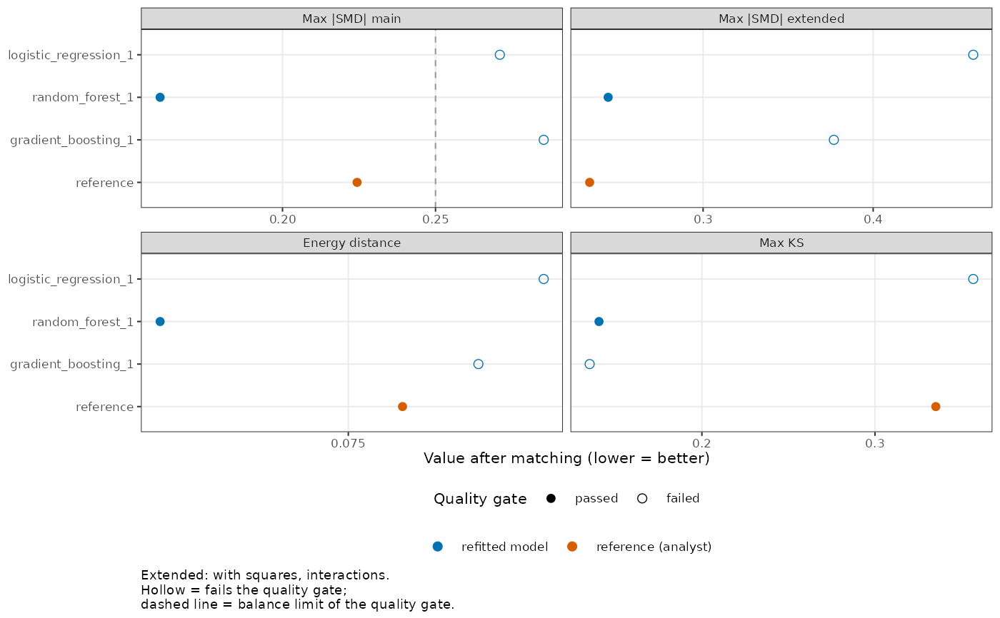
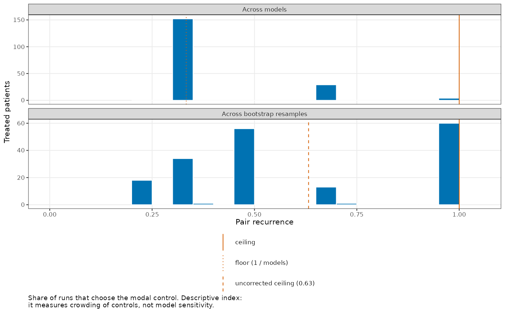

Plots of a propensity model sensitivity result
Source:R/plot_propensity_sensitivity.R
plot.propensity_sensitivity.RdThree plots, built with ggplot2 and a colour-blind-safe (Okabe-Ito) palette, readable at 8 cm width.
Details
type = "patients": one point per treated patient; x = rank disagreement, y = scaled control spread, colour = outside the support of the untreated patients' scores; dashed lines at the study medians. Upper right = the models disagree about this patient and pick different kinds of untreated partners. Treated patients unmatched in every model (caliper) are left out.type = "models": the four balance statistics by model, one panel per statistic. Models that fail the quality gate are hollow; the analyst's reference model is drawn in its own colour; the dashed line in the main-terms panel is the balance limit of the quality gate.type = "recurrence": histograms of pair recurrence over treated patients, across models (floor 1 / number of models and ceiling 1 drawn) and across bootstrap resamples with the corrected denominator (ceiling 1; the expected ceiling 1 - e^(-1) about 0.63 of the uncorrected version is drawn for reference).
Examples
data("lalonde", package = "MatchIt")
matched <- MatchIt::matchit(treat ~ age + educ + race + married + nodegree + re74 + re75,
data = lalonde, distance = "glm", link = "linear.logit",
replace = TRUE)
sensitivity <- propensity_sensitivity(
matched, algorithms = c("logistic_regression", "random_forest", "gradient_boosting"),
seeds = 1, n_trees = 100, bootstrap_samples = 5
)
plot(sensitivity, type = "patients")

# \donttest{
# Each further plot adds a few seconds of drawing time.
plot(sensitivity, type = "models")

plot(sensitivity, type = "recurrence")

# }